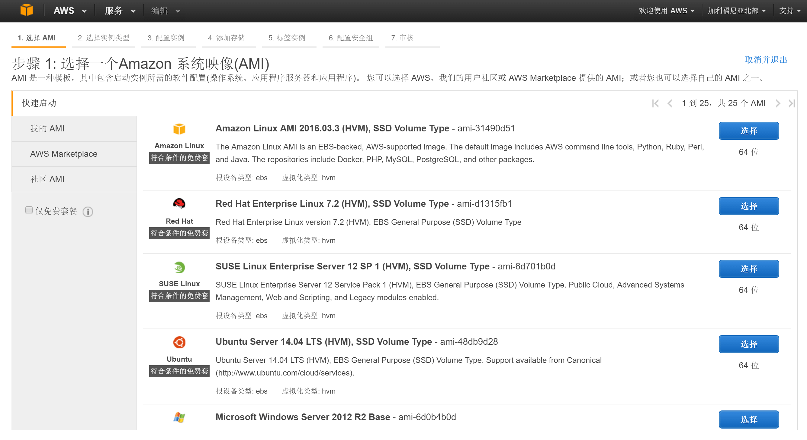
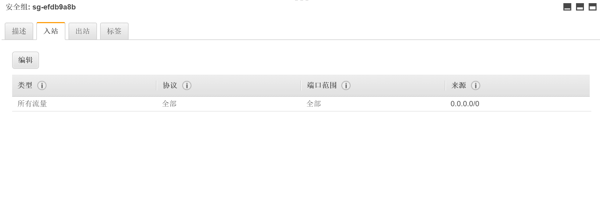
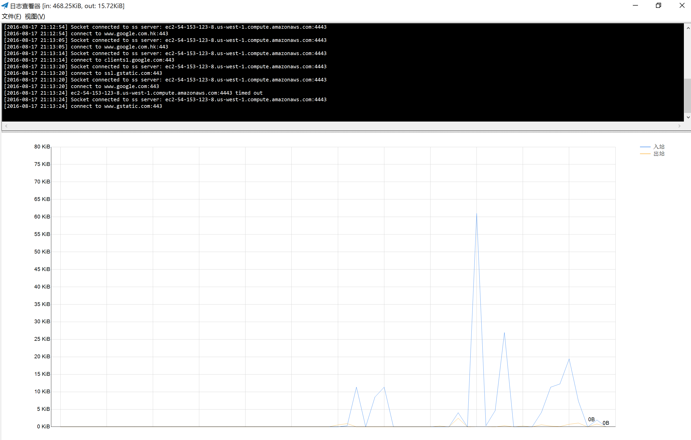

基于 AWS 探索 Shadowsocks
今天本来想写一篇关于 JQuery 最佳实践的文章，但是写到中途手滑没有保存，遂留到日后再写好了。今天要写的一篇文章是关于 Shadowsocks 在 AWS 上的实践文章。通过本文所述的实践操作，大家可以熟悉 AWS 的常用操作，并逐渐了解 Shadowsocks 的核心原理。同时，这也是一次记录与整理。
Shadowsocks 是什么这里就不做介绍了，简单的理解就是一个代理服务。我们要做的就是在 AWS 的海外 EC2 服务器上配置 Shadowsocks 服务，这样在本地我们既可以通过连接这台海外的 EC2 服务器作为正向代理服务器来访问外部网络。当然这整个的配置过程并不是十分的“傻瓜式”，还需要对服务器以及 Linux 的基本操作有着基本的了解。
一、注册以及配置 EC2 服务器：
现在的 AWS 新注册用户可以享用一年的免费 “t2.micro“ 型号云主机的使用权，而且 AWS 的所有 EC2 主机都会自带有默认的外网 DNS 解析，所以我们这里只需要申请一台这样的免费主机即可。请注意，在 AWS 上注册用户时需要提供信用卡信息，而且是必需的。我这里申请的是加利福尼亚北部的 EC2 服务器，顺带一句，按照付费方案计算的话，弗吉尼亚北部的 EC2 机群是最便宜的。当全部注册流程结束后会来到下图所示页面来创建和启用 EC2 服务器。具体的步骤这里不多讲，直接按照提示选择并且下一步即可，选择 “AMI“ 和“实例类型“时请注意选择带有“免费“字样标志的实例类型。当实例申请配置进行到最后一步时，AWS 会让用户为该实例选择或创建一个密钥对，这个密钥对的私钥（*.pem）文件会被用户下载下来用来登陆 SSH 终端，这里请妥善保管该私钥，因为只能下载一次。

EC2 实例启动后我们来到控制面板的“安全组“选项卡，这里可以配置 EC2 服务器的安全策略，比如允许的进网 IP，协议等等。我们这里可以修改已有的安全组协议或者创建新的自定义安全组协议。主要配置项为“入站“的安全设置，如下图所示，将访问设置设置成允许来自所有协议的所有流量。

二、配置 Shadowsocks 服务端：
接下来便要开始配置服务器端的 Shadowsocks 服务了，使用之前生成的私钥文件通过 SSH 客户端连接到我们的 EC2 服务器，EC2 服务器的外网 DNS 可以通过在“实例“选项卡点选我们的 EC2，在其下方的信息栏中找到。由于我们这里的 EC2 服务器使用的是 Ubuntu 系统，所以可以直接按照 Shadowsocks 在 Github 上的 Wiki 文档进行配置。
请阅读上文给出的 Wiki 页面，直接按照 “Install” 章节的指南进行安装即可。Shadowsocks 的核心服务由 Python 语言编写，所以直接通过 “pip” 来安装即可使用，省去了编译和链接的过程。下面给出的链接是 Shadowsocks 在 Python Package Management 页面的官方链接。
三、开始使用 Shadowsocks 客户端：

服务端的工作全部结束之后既可开始使用 Shadowsocks 的客户端工具来连接我们的 EC2 代理服务器了。Windows 版本的 Shadowsocks 客户端基于 C# 语言编写，并提供了本地负载均衡、PAC（代理自动配置）等高级功能，自带的流量监控功能也十分好用（如上图所示）。可以通过以下给出的 Github 链接来查看详细的说明。
对于 MacOS 和 IOS 等系统上的客户端，笔者还没有进行尝试，可以通过上述第一个 Wiki 页面来查找相关的信息。
四、Shadowsocks 源码解析：
我们可以直接从 Github 或者上述给出的 Python 包管理页面直接下载 Shadowsocks 的服务端源码进行解读。